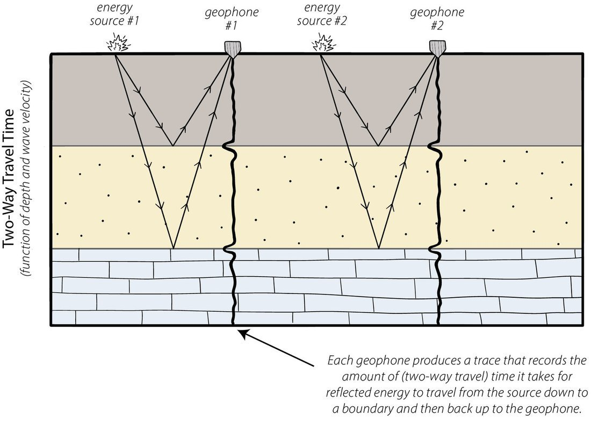
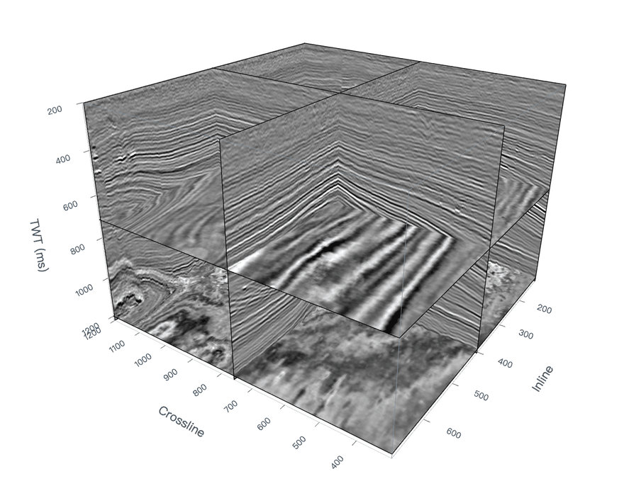
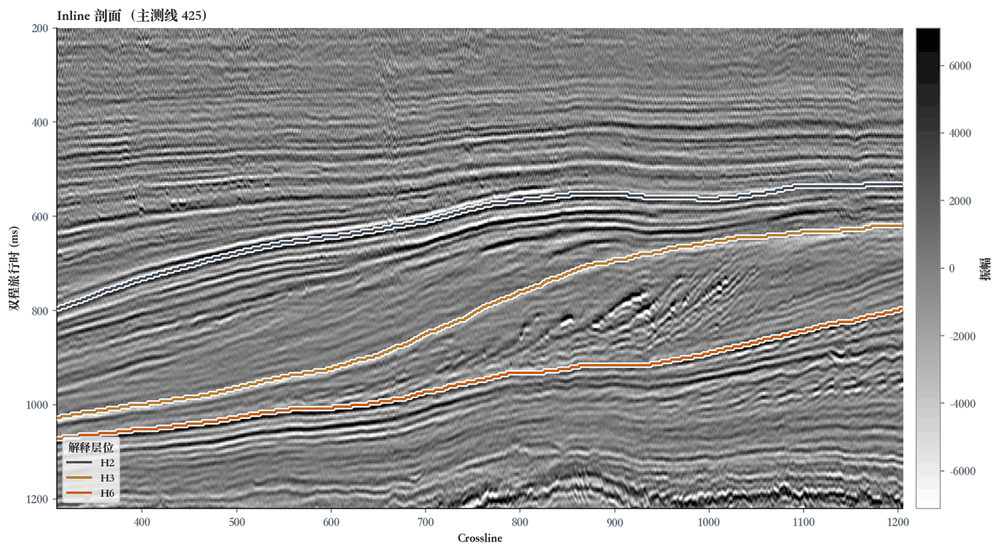
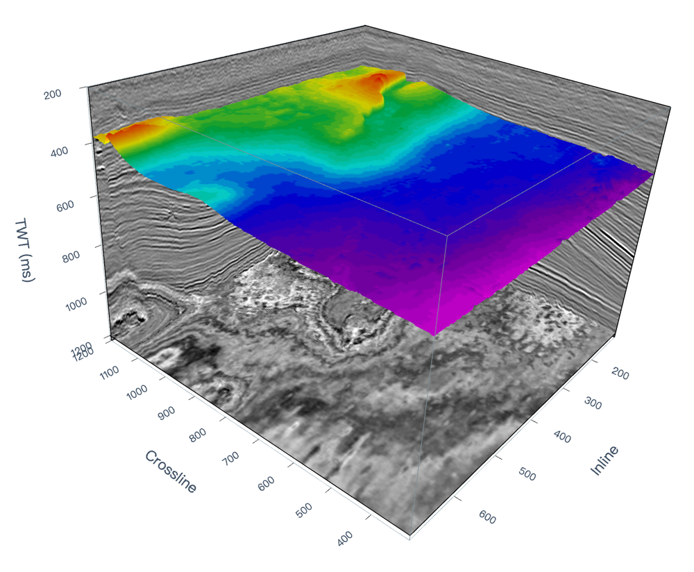
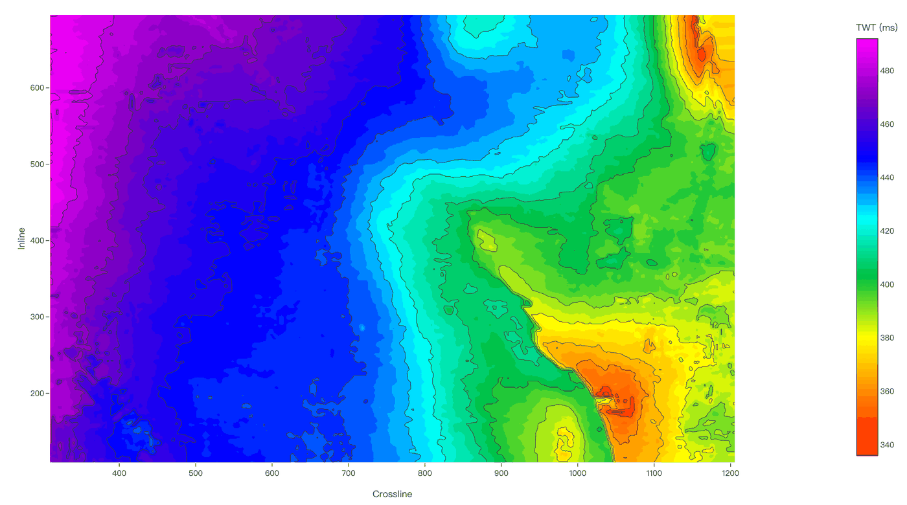

波峰与波谷
波峰、波谷：振幅的局部最大值、最小值，可作为拾取标记。
地震勘探通过激发地震波、接收地下反射信号，获取与地下地层结构有关的信息。


层位：用于识别和对比地层的地质标志面，如地层顶界或底界。
主要用途：描述地层的空间分布，支持构造解释和地质建模。
测井与地质资料 → 井震标定 → 目标反射
将目标地层界面与地震剖面中的反射对应起来，明确要追踪哪一层。

种子点 → 相邻道匹配 → 层位曲线
在目标反射清晰处选点，依据波形相似性与反射连续性匹配相邻道，保持相位一致并记录各道的层位时间。
波峰与波谷
波峰、波谷：振幅的局部最大值、最小值，可作为拾取标记。
反射同相轴
连接相邻道上同一反射事件的对应相位点。
二维层位曲线 → 多条控制线 → 三维层位表面
在多条 Inline 和 Crossline 剖面上建立控制线，再依据反射连续性与局部倾角，将解释扩展到剖面之间。
检查重点：断层、弱反射和噪声区域是否仍对应同一目标反射。
在 H2 附近选点或载入示例点 → 开始追踪 → 对照参考层位检查偏离。
同一层位可用三维表面展示空间形态，也可用时间图查看平面上的时间变化。


图中为时间域层位；转换为深度需结合速度信息。
匹配依据：波形相似性与相位一致性。
通过训练学习地震特征与目标层位的对应关系。